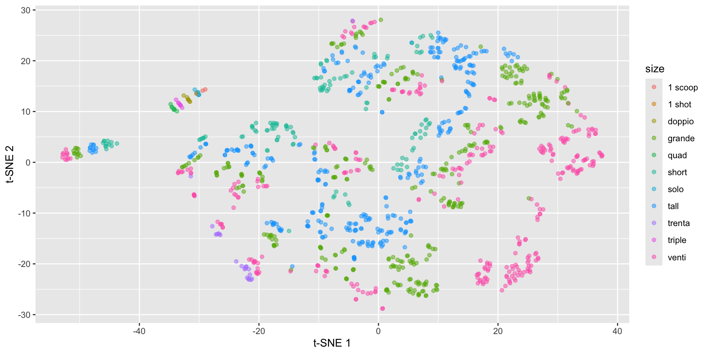

starbucks_scaled_quant_data <- starbucks |>
dplyr::select(serv_size_m_l:caffeine_mg) %>%
scale(center = FALSE, scale = apply(., 2, sd, na.rm = TRUE))
dist_euc <- dist(starbucks_scaled_quant_data)
starbucks_mds <- cmdscale(d = dist_euc, k = 2)
starbucks <- starbucks |>
mutate(mds1 = starbucks_mds[,1],
mds2 = starbucks_mds[,2])
starbucks |>
ggplot(aes(x = mds1, y = mds2)) +
geom_point(alpha = 0.5) +
labs(x = "Coordinate 1", y = "Coordinate 2")High-Dimensional Data
Prof Ron Yurko
2024-09-18
Reminders, previously, and today…
HW3 is due TONIGHT!
HW4 is due next Wednesday Sept 25th
Discussed creating pairs plots for initial inspection of several variables
Began thinking about ways to displays dataset structure via correlations
Used heatmaps and parallel coordinates plot to capture observation and variable structure
TODAY:
Projections based on some notion of “distance”
Intuition: Take high-dimensional data and represent it in 2-3 dimensions, then visualize those dimensions
Thinking about distance…
When describing visuals, we’ve implicitly “clustered” observations together
These types of task require characterizing the distance between observations
This is easy to do for 2 quantitative variables: just make a scatterplot (possibly with contours or heatmap)
But how do we define “distance” for high-dimensional data?
Let \(\boldsymbol{x}_i = (x_{i1}, \dots, x_{ip})\) be a vector of \(p\) features for observation \(i\)
Question of interest: How “far away” is \(\boldsymbol{x}_i\) from \(\boldsymbol{x}_j\)?
When looking at a scatterplot, you’re using Euclidean distance (length of the line in \(p\)-dimensional space):
\[d(\boldsymbol{x}_i, \boldsymbol{x}_j) = \sqrt{(x_{i1} - x_{j1})^2 + \dots + (x_{ip} - x_{jp})^2}\]
Distances in general
There’s a variety of different types of distance metrics: Manhattan, Mahalanobis, Cosine, Kullback-Leiber Divergence, Wasserstein, but we’re just going to focus on Euclidean distance
\(d(\boldsymbol{x}_i, \boldsymbol{x}_j)\) measures pairwise distance between two observations \(i,j\) and has the following properties:
Identity: \(\boldsymbol{x}_i = \boldsymbol{x}_j \iff d(\boldsymbol{x}_i, \boldsymbol{x}_j) = 0\)
Non-Negativity: \(d(\boldsymbol{x}_i, \boldsymbol{x}_j) \geq 0\)
Symmetry: \(d(\boldsymbol{x}_i, \boldsymbol{x}_j) = d(\boldsymbol{x}_j, \boldsymbol{x}_i)\)
Triange Inequality: \(d(\boldsymbol{x}_i, \boldsymbol{x}_j) \leq d(\boldsymbol{x}_i, \boldsymbol{x}_k) + d(\boldsymbol{x}_k, \boldsymbol{x}_j)\)
Distance Matrix: matrix \(D\) of all pairwise distances
\(D_{ij} = d(\boldsymbol{x}_i, \boldsymbol{x}_j)\)
where \(D_{ii} = 0\) and \(D_{ij} = D_{ji}\)
Multi-dimensional scaling (MDS)
General approach for visualizing distance matrices
- Puts \(n\) observations in a \(k\)-dimensional space such that the distances are preserved as much as possible (where \(k << p\) typically choose \(k = 2\))
MDS attempts to create new point \(\boldsymbol{y}_i = (y_{i1}, y_{i2})\) for each unit such that:
\[\sqrt{(y_{i1} - y_{j1})^2 + (y_{i2} - y_{j2})^2} \approx D_{ij}\]
- i.e., distance in 2D MDS world is approximately equal to the actual distance
Then plot the new \(\boldsymbol{y}\)s on a scatterplot
Use the
scale()function to ensure variables are comparableMake a distance matrix for this dataset
Visualize it with MDS
MDS example with Starbucks drinks
MDS example with Starbucks drinks
View structure with additional variables
View structure with additional variables
Dimension reduction - searching for variance
GOAL: Focus on reducing dimensionality of feature space while retaining most of the information in a lower dimensional space
- \(n \times p\) matrix \(\rightarrow\) dimension reduction technique \(\rightarrow\) \(n \times k\) matrix
Special case we just discussed: MDS
- \(n \times n\) distance matrix \(\rightarrow\) MDS \(\rightarrow\) \(n \times k\) matrix (usually \(k = 2\))
Reduce data to a distance matrix
Reduce distance matrix to \(k = 2\) dimensions
Principal Component Analysis (PCA)
\[ \begin{pmatrix} & & \text{really} & & \\ & & \text{wide} & & \\ & & \text{matrix} & & \end{pmatrix} \rightarrow \text{matrix algebra stuff} \rightarrow \begin{pmatrix} \text{much} \\ \text{thinner} \\ \text{matrix} \end{pmatrix} \]
- Start with \(n \times p\) matrix of correlated variables \(\rightarrow\) \(n \times k\) matrix of uncorrelated variables
Each of the \(k\) columns in the right-hand matrix are principal components, all uncorrelated with each other
First column accounts for most variation in the data, second column for second-most variation, and so on
Intuition: first few principal components account for most of the variation in the data
What are principal components?
Assume \(\boldsymbol{X}\) is a \(n \times p\) matrix that is centered and stardardized
Total variation \(= p\), since Var( \(\boldsymbol{x}_j\) ) = 1 for all \(j = 1, \dots, p\)
PCA will give us \(p\) principal components that are \(n\)-length columns - call these \(Z_1, \dots, Z_p\)
First principal component (aka PC1):
\[Z_1 = \phi_{11} X_1 + \phi_{21} X_2 + \dots + \phi_{p1} X_p\]
\(\phi_{j1}\) are the weights indicating the contributions of each variable \(j \in 1, \dots, p\)
Weights are normalized \(\sum_{j=1}^p \phi_{j1}^2 = 1\)
\(\phi_{1} = (\phi_{11}, \phi_{21}, \dots, \phi_{p1})\) is the loading vector for PC1
- \(Z_1\) is a linear combination of the \(p\) variables that has the largest variance
What are principal components?
Second principal component:
\[Z_2 = \phi_{12} X_1 + \phi_{22} X_2 + \dots + \phi_{p2} X_p\]
\(\phi_{j2}\) are the weights indicating the contributions of each variable \(j \in 1, \dots, p\)
Weights are normalized \(\sum_{j=1}^p \phi_{j1}^2 = 1\)
\(\phi_{2} = (\phi_{12}, \phi_{22}, \dots, \phi_{p2})\) is the loading vector for PC2
\(Z_2\) is a linear combination of the \(p\) variables that has the largest variance
- Subject to constraint it is uncorrelated with \(Z_1\)
What are principal components?
We repeat this process to create \(p\) principal components
Uncorrelated: Each (\(Z_j, Z_{j'}\)) is uncorrelated with each other
Ordered Variance: Var( \(Z_1\) ) \(>\) Var( \(Z_2\) ) \(> \dots >\) Var( \(Z_p\) )
Total Variance: \(\sum_{j=1}^p \text{Var}(Z_j) = p\)
Intuition: pick some \(k << p\) such that if \(\sum_{j=1}^k \text{Var}(Z_j) \approx p\), then just using \(Z_1, \dots, Z_k\)
Visualizing PCA in two dimensions
Visualizing PCA in two dimensions
Visualizing PCA in two dimensions
Visualizing PCA in two dimensions
Visualizing PCA in two dimensions
So what do we do with the principal components?
The point: given a dataset with \(p\) variables, we can find \(k\) variables \((k << p)\) that account for most of the variation in the data
Note that the principal components are NOT easy to interpret - these are combinations of all variables
PCA is similar to MDS with these main differences:
MDS reduces a distance matrix while PCA reduces a data matrix
PCA has a principled way to choose \(k\)
Can visualize how the principal components are related to variables in data
Working with PCA on Starbucks drinks
Use the prcomp() function (based on SVD) for PCA on centered and scaled data
starbucks_pca <- prcomp(dplyr::select(starbucks, serv_size_m_l:caffeine_mg),
center = TRUE, scale. = TRUE)
summary(starbucks_pca)Importance of components:
PC1 PC2 PC3 PC4 PC5 PC6 PC7
Standard deviation 2.4748 1.3074 1.0571 0.97919 0.67836 0.56399 0.4413
Proportion of Variance 0.5568 0.1554 0.1016 0.08716 0.04183 0.02892 0.0177
Cumulative Proportion 0.5568 0.7122 0.8138 0.90093 0.94276 0.97168 0.9894
PC8 PC9 PC10 PC11
Standard deviation 0.28123 0.16874 0.08702 0.04048
Proportion of Variance 0.00719 0.00259 0.00069 0.00015
Cumulative Proportion 0.99657 0.99916 0.99985 1.00000Computing Principal Components
Extract the matrix of principal components \(\boldsymbol{Z} = XV\) (dimension of \(\boldsymbol{Z}\) will match original data)
PC1 PC2 PC3 PC4 PC5 PC6
[1,] -3.766852 -1.0023657 0.2482698 -0.1521871448 0.24739830 -0.11365847
[2,] -3.633234 -0.6946439 1.2059943 -0.3720566566 0.06052789 -0.06406410
[3,] -3.518063 -0.3981399 2.2165170 -0.5967175941 -0.13122572 -0.01937237
[4,] -3.412061 -0.1067045 3.3741594 -0.8490378243 -0.26095965 -0.00899485
[5,] -3.721426 -0.9868147 -1.0705094 0.0949330091 -0.27181508 0.17491809
[6,] -3.564899 -0.6712499 -0.7779083 -0.0003019903 -0.72054963 0.37005543
PC7 PC8 PC9 PC10 PC11
[1,] -0.02812472 0.006489978 0.05145094 -0.06678083 -0.019741873
[2,] 0.05460952 0.021148978 0.07094211 -0.08080545 -0.023480029
[3,] 0.09050806 0.031575955 0.08901403 -0.09389227 -0.028669251
[4,] 0.11585507 0.037521689 0.11287190 -0.11582260 -0.034691142
[5,] 0.07009414 0.037736197 0.02892317 -0.03631676 -0.005775410
[6,] 0.20236484 0.068154160 0.03705252 -0.03497690 -0.002469611Columns are uncorrelated, such that Var( \(Z_1\) ) \(>\) Var( \(Z_2\) ) \(> \dots >\) Var( \(Z_p\) ) - can start with a scatterplot of \(Z_1, Z_2\)
Starbucks drinks: PC1 and PC2
Starbucks drinks: PC1 and PC2
Making PCs interpretable with biplots (factoextra)
Making PCs interpretable with biplots (factoextra)
How many principal components to use?
Intuition: Additional principal components will add smaller and smaller variance
- Keep adding components until the added variance drops off
Importance of components:
PC1 PC2 PC3 PC4 PC5 PC6 PC7
Standard deviation 2.4748 1.3074 1.0571 0.97919 0.67836 0.56399 0.4413
Proportion of Variance 0.5568 0.1554 0.1016 0.08716 0.04183 0.02892 0.0177
Cumulative Proportion 0.5568 0.7122 0.8138 0.90093 0.94276 0.97168 0.9894
PC8 PC9 PC10 PC11
Standard deviation 0.28123 0.16874 0.08702 0.04048
Proportion of Variance 0.00719 0.00259 0.00069 0.00015
Cumulative Proportion 0.99657 0.99916 0.99985 1.00000Create scree plot (aka “elbow plot”) to choose
Nonlinear dimension reduction, e.g., t-SNE
Consider the following spiral structure…

PCA simply rotates the data…

Nonlinear dimension reduction with t-SNE

t-distributed stochastic neighbor embedding
- Construct conditional probability for similarity between observations in original space, i.e., probability \(x_i\) will pick \(x_j\) as its neighbor
\[p_{j \mid i}=\frac{\exp \left(-\left\|x_i-x_j\right\|^2 / 2 \sigma_i^2\right)}{\sum_{k \neq i} \exp \left(-\left\|x_i-x_k\right\|^2 / 2 \sigma_i^2\right)},\quad p_{i j}=\frac{\left(p_{j \mid i}+p_{i \mid j}\right)}{2 n}\]
- \(\sigma_i\) is the variance of Gaussian centered at \(x_i\) controlled by perplexity: \(\log (\text { perplexity })=-\sum_j p_{j \mid i} \log _2 p_{j \mid i}\)
t-distributed stochastic neighbor embedding
- Find points \(y_i\) in lower dimensional space with symmetrized student t-distribution
\[q_{j \mid i}=\frac{\left(1+\left\|y_i-y_j\right\|^2\right)^{-1}}{\sum_{k \neq i}\left(1+\left\|y_i-y_k\right\|^2\right)^{-1}}, \quad q_{i j}=\frac{q_{i \mid j}+q_{j \mid i}}{2 n}\]
- Match conditional probabilities by minimize sum of KL divergences \(C=\sum_{i j} p_{i j} \log \left(\frac{p_{i j}}{q_{i j}}\right)\)
Starbucks t-SNE plot with Rtsne
set.seed(2013)
tsne_fit <- starbucks |>
dplyr::select(serv_size_m_l:caffeine_mg) |>
scale() |>
Rtsne(check_duplicates = FALSE)
starbucks |>
mutate(tsne1 = tsne_fit$Y[,1],
tsne2 = tsne_fit$Y[,2]) |>
ggplot(aes(x = tsne1, y = tsne2,
color = size)) +
geom_point(alpha = 0.5) +
labs(x = "t-SNE 1", y = "t-SNE 2")Starbucks t-SNE plot with Rtsne

Starbucks t-SNE plot - involves randomness!
set.seed(2014)
tsne_fit <- starbucks |>
dplyr::select(serv_size_m_l:caffeine_mg) |>
scale() |>
Rtsne(check_duplicates = FALSE)
starbucks |>
mutate(tsne1 = tsne_fit$Y[,1],
tsne2 = tsne_fit$Y[,2]) |>
ggplot(aes(x = tsne1, y = tsne2,
color = size)) +
geom_point(alpha = 0.5) +
labs(x = "t-SNE 1", y = "t-SNE 2")Starbucks t-SNE plot - involves randomness!

Starbucks t-SNE plot - watch the perplexity!
set.seed(2013)
tsne_fit <- starbucks |>
dplyr::select(serv_size_m_l:caffeine_mg) |>
scale() |>
Rtsne(perplexity = 100,
check_duplicates = FALSE)
starbucks |>
mutate(tsne1 = tsne_fit$Y[,1],
tsne2 = tsne_fit$Y[,2]) |>
ggplot(aes(x = tsne1, y = tsne2,
color = size)) +
geom_point(alpha = 0.5) +
labs(x = "t-SNE 1", y = "t-SNE 2")Starbucks t-SNE plot - watch the perplexity!

Back to the spirals: results depend on perplexity!
Criticisms of t-SNE plots
Poor scalability: does not scale well for large data, can practically only embed into 2 or 3 dimensions
Meaningless global structure: distance between clusters might not have clear interpretation and cluster size doesn’t have any meaning to it
Poor performance with very high dimensional data: need PCA as pre-dimension reduction step
Sometime random noise can lead to false positive structure in the t-SNE projection
Can NOT interpret like PCA!
Recap and next steps
Walked through PCA for dimension reduction
Discussed non-linear dimension reduction with t-SNE plots
HW3 is due TONIGHT!
HW4 is posted due next Wednesday Sept 25th
Next time: Visualizing trends and time series data
Recommended reading: CW Chapter 12 Visualizing associations among two or more quantitative variables, How to Use t-SNE Effectively, Understanding UMAP
PCA: singular value decomposition (SVD)
\[ X = U D V^T \]
Matrices \(U\) and \(V\) contain the left and right (respectively) singular vectors of scaled matrix \(X\)
\(D\) is the diagonal matrix of the singular values
SVD simplifies matrix-vector multiplication as rotate, scale, and rotate again
\(V\) is called the loading matrix for \(X\) with \(\phi_{j}\) as columns,
- \(Z = X V\) is the PC matrix
Eigenvalue decomposition (aka spectral decomposition)
\[ X = U D V^T \]
\(V\) are the eigenvectors of \(X^TX\) (covariance matrix, \(^T\) means transpose)
\(U\) are the eigenvectors of \(XX^T\)
The singular values (diagonal of \(D\)) are square roots of the eigenvalues of \(X^TX\) or \(XX^T\)
Meaning that \(Z = UD\)
Eigenvalues guide dimension reduction
We want to choose \(p^* < p\) such that we are explaining variation in the data
Eigenvalues \(\lambda_j\) for \(j \in 1, \dots, p\) indicate the variance explained by each component
\(\sum_j^p \lambda_j = p\), meaning \(\lambda_j \geq 1\) indicates \(\text{PC}j\) contains at least one variable’s worth in variability
\(\lambda_j / p\) equals proportion of variance explained by \(\text{PC}j\)
Arranged in descending order so that \(\lambda_1\) is largest eigenvalue and corresponds to PC1
Can compute the cumulative proportion of variance explained (CVE) with \(p^*\) components:
\[\text{CVE}_{p^*} = \frac{\sum_j^{p*} \lambda_j}{p}\]